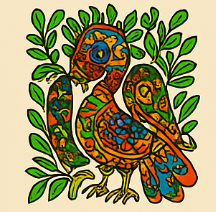

"Gond Painting is a vibrant tribal art form from central India, blending nature, folklore, and intricate patterns into stunning visual stories."
1. Origins (Prehistoric to Early Period):
- Gond art originated from cave and wall paintings in Madhya Pradesh centuries ago.
- It was used to decorate walls and floors during festivals and rituals.
2. Medieval to Colonial Era:
- Gond tribes continued the tradition, depicting nature, animals, and myths.
- The art form stayed confined to rural areas until the 20th century.
3. Modern Era (20th Century–Present):
- Artists like Jangarh Singh Shyam transformed it into a recognized art form on canvas and paper.
- Exhibited globally, bringing tribal art into the mainstream.
- Jangarh Singh Shyam: Pioneer of Gond painting on paper and canvas.
- Bhajju Shyam: Internationally acclaimed for “The London Jungle Book.”
- Durga Bai & Ram Singh Urveti: Known for contemporary adaptations of Gond art.
1. Use of bright colors like red, yellow, green, and white.
2. Intricate patterns such as dots, dashes, and lines filling figures.
3. Themes inspired by nature: animals, birds, trees, and deities.
4. Traditionally made with natural pigments; now also acrylic on paper/canvas.
5. Storytelling art reflecting myths, folklore, and daily life.
6. Flat perspective with decorative textures.